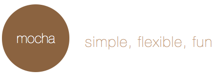

JavaScript? Testing?
Presenter Notes
Who Am I?
David Luecke
Presenter Notes
Open Source?
Presenter Notes
Testing, What's Out There?
DailyJS survey from December 2012:
45%

31%

41%

Presenter Notes
But ...
51% of respondents said they don’t write tests
Presenter Notes
A Holy Grail?
Adam Hawkins at RejectJS 2012 (watch)
- Browser independent
- All tests written in JavaScript
- Unit and functional testing
- Test against a single browser in development
- Test against all target browsers in CI
- Runs from the CLI
Presenter Notes
Not Again!
Presenter Notes
So how do we solve this?
There will always be some holy grail!
- Break things down into smaller pieces
- Try and find the best possible solution
- Build something on top of it
Presenter Notes
Test Reporting
Presenter Notes
Starting Tests
Open the test page URL in the target browser(s)
Automate with Launchpad:
- NodeJS module for starting browsers
- Common browser launching API
- Dynamic local browser discovery
- Launch BrowserStack workers
- BrowserStack API compatible server
- Remote Preview
Presenter Notes
Testee - A test reporter
Automated cross-browser test reporter for QUnit, Jasmine and Mocha
Some neat features:
- Runs on all browsers
- Many output formats
- Easy CI integration
- BrowserStack support
- Code coverage
- GruntJS task
Presenter Notes
Get started with Testee
Install:
npm install -g testee
Go to your project folder:
cd underscore
Point to your test page and run with PhantomJS:
testee test/index.html
Point to your test page and run with local Firefox:
testee test/index.html --browser firefox
Presenter Notes
More Testing!
Output XML test results for CI:
testee test/index.html --browser safari --reporter XUnit > testresults.xml
Run remote tests on Chrome Canary and output code coverage statistics:
testee http://underscorejs.org/test/index.html --browser canary --coverage
Test with IE 9.0 on BrowserStack:
testee test/index.html --browser ie:9.0@win --launch browserstack
Presenter Notes
Configuration File
Run test in CI using Browserstack and the Samsung Galaxy Nexus emulator:
{
"browser": {
"version": "4.0",
"device": "Samsung Galaxy Nexus",
"os": "android"
},
"launch": {
"type": "browserstack",
"username": "browserstackusername",
"password": "browserstackpassword"
},
"reporter": "Dot"
}
And run like:
testee --config testee.json > testresults_galaxy_tab.xml
Presenter Notes
Are We There Yet?
- Browser independent
- All tests written in JavaScript
- Unit and functional testing
- Test against a single browser in development
- Test against all target browsers in CI
- Runs from the CLI
Presenter Notes
Functional Testing
Presenter Notes
What Is It?
Automated tests performed from a user perspective
- Emulate user input
- Examine the result
- Black box testing
Used for
- Testing component interaction
- Verifying UI heavy widgets
- Application smoke tests
Presenter Notes
FuncUnit
Functional testing library built on top of jQuery and QUnit:
- Use jQuery syntax to emulate user input
- Write QUnit style tests
Testing a TodoMVC app
test('TodoMVC app', function() {
S('#new-todo').click().type('Do some nerdy stuff\r').wait(500);
S('#todo-list li').size(1, 'Got one Todo');
S('#todo-list li:first label')
.html('Do some nerdy stuff', 'Todo has correct text');
S('#todo-count').html(/<strong>1<\/strong>(.*)item(.*)left/,
'Todo count text is correct');
});
Presenter Notes
Are We There Yet?
- Browser independent
- All tests written in JavaScript
- Unit and functional testing
- Test against a single browser in development
- Test against all target browsers in CI
- Runs from the CLI